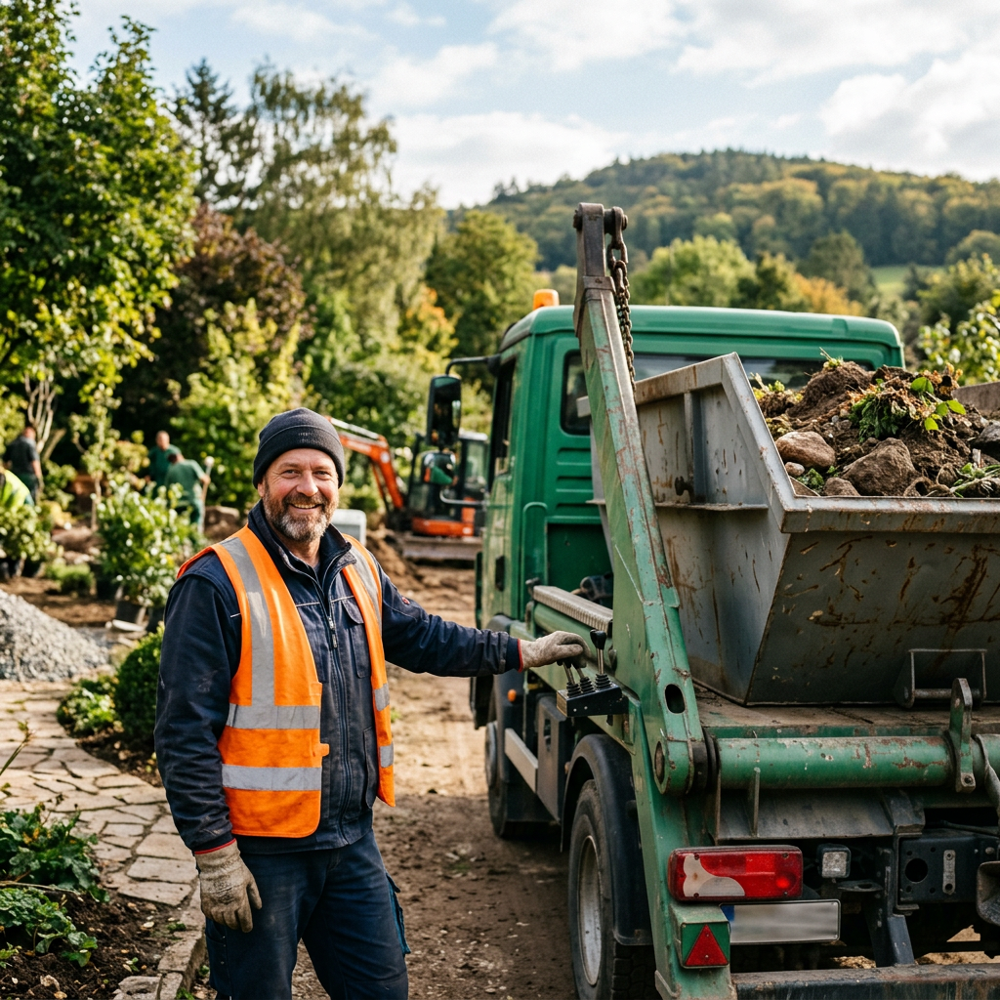

LKW-Fahrer (m/w/d)
Vollzeit · Konstanz · ab sofort
Deine Aufgaben
- Transport von Materialien, Maschinen und Grünabfällen
- Be- und Entladen des Fahrzeugs mit Ladekran
- Pflege und Wartung des zugewiesenen Lkw
- Unterstützung der Kolonnen bei der Materiallogistik
- Führen von Fahrtenbüchern und Lieferscheinen
Dein Profil
- Gültiger Führerschein der Klasse C/CE
- Berufserfahrung im Baustellenverkehr von Vorteil
- Zuverlässigkeit und selbstständige Arbeitsweise
- Technisches Verständnis für die Fahrzeugpflege
- Teamfähigkeit und freundliches Auftreten
Was wir bieten
- Sicherer Arbeitsplatz in einem wachsenden Familienunternehmen
- Moderner Fuhrpark mit gut gewarteten Fahrzeugen
- Leistungsgerechte Vergütung
- Angenehmes Betriebsklima mit flachen Hierarchien
- Weiterbildungsmöglichkeiten